Muhammad Irfan Rusydi Razaleigh
Aspiring Game Developer
Hello! I'm Irfan.
Him's who I am & what I do
An enthusiastic game development student with awards in game design and programming.


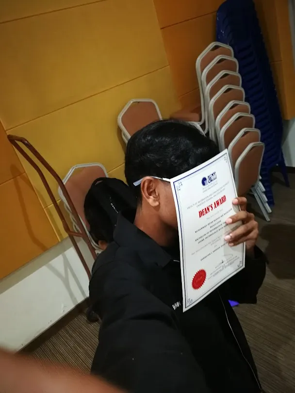

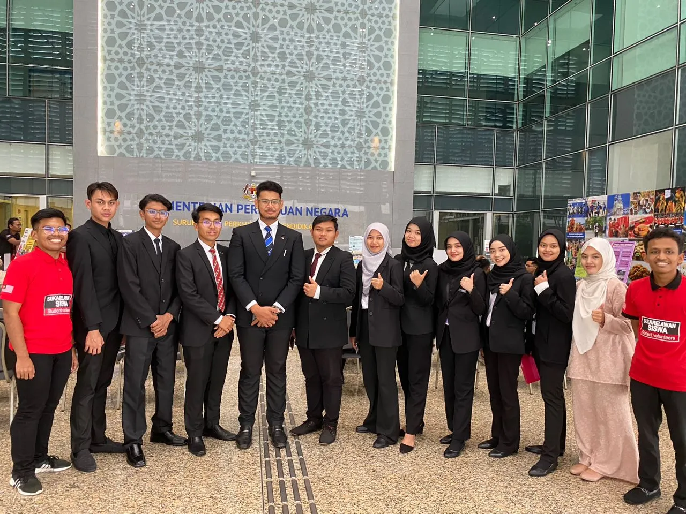
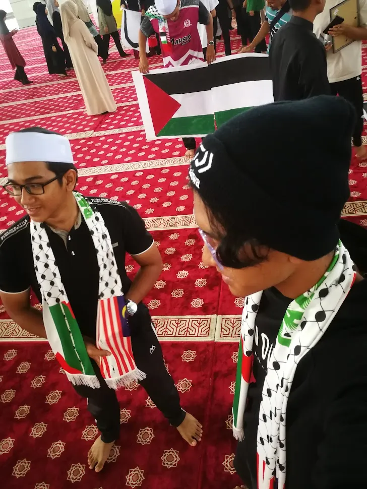
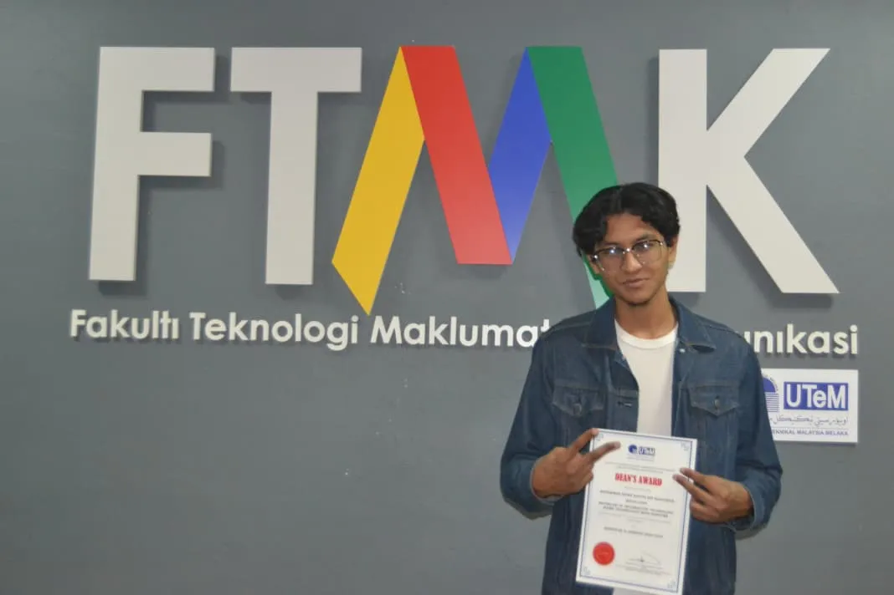

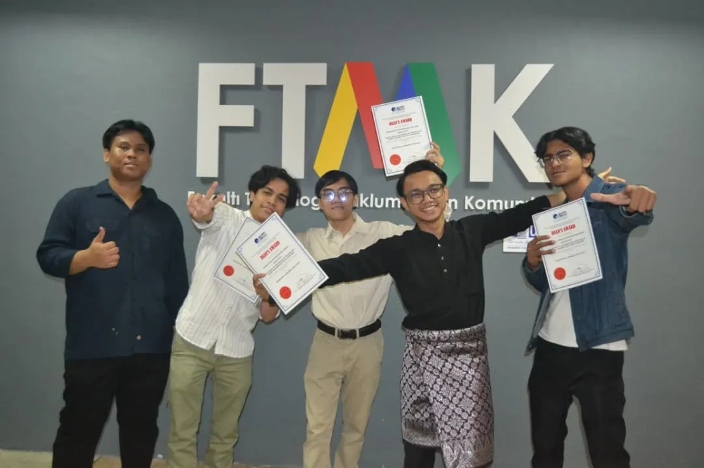

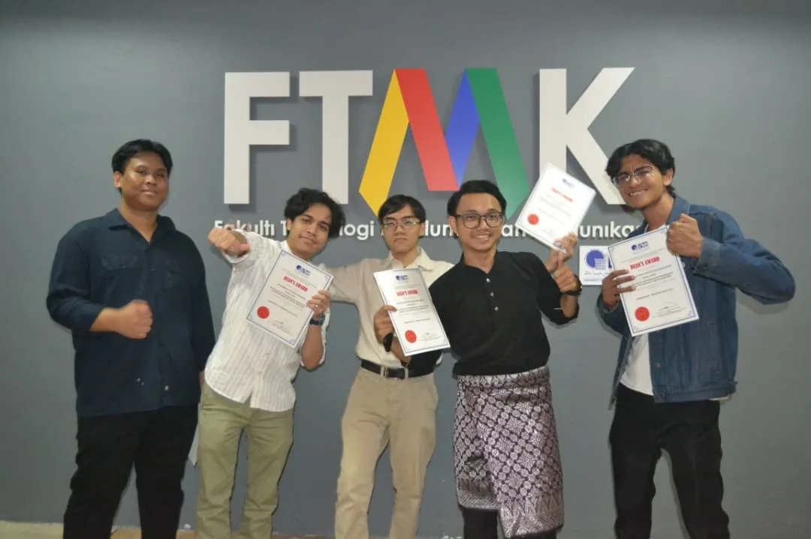
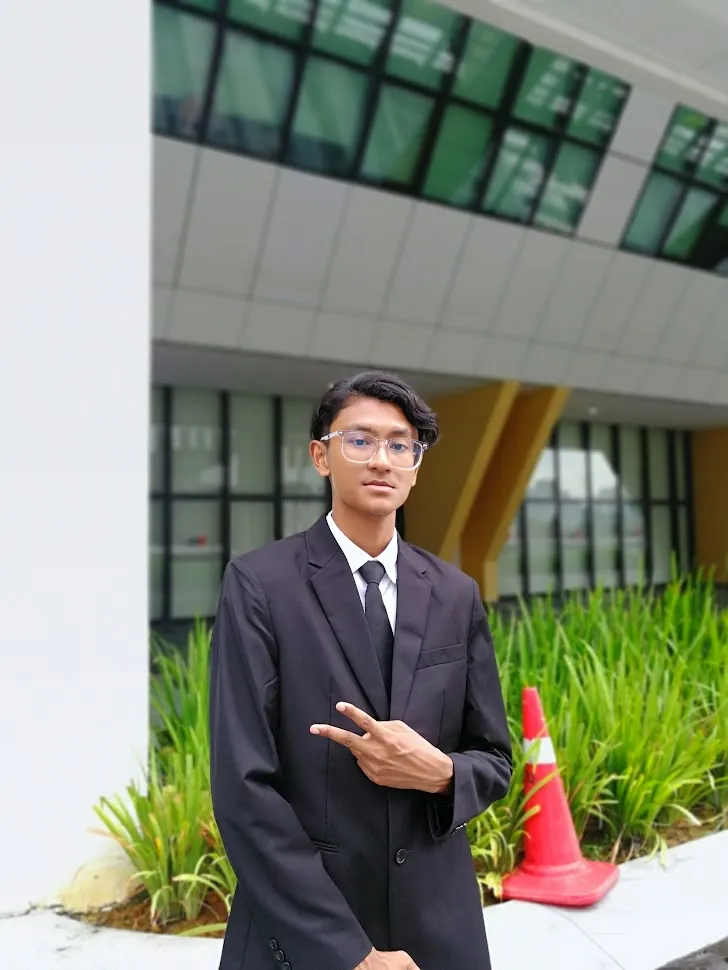
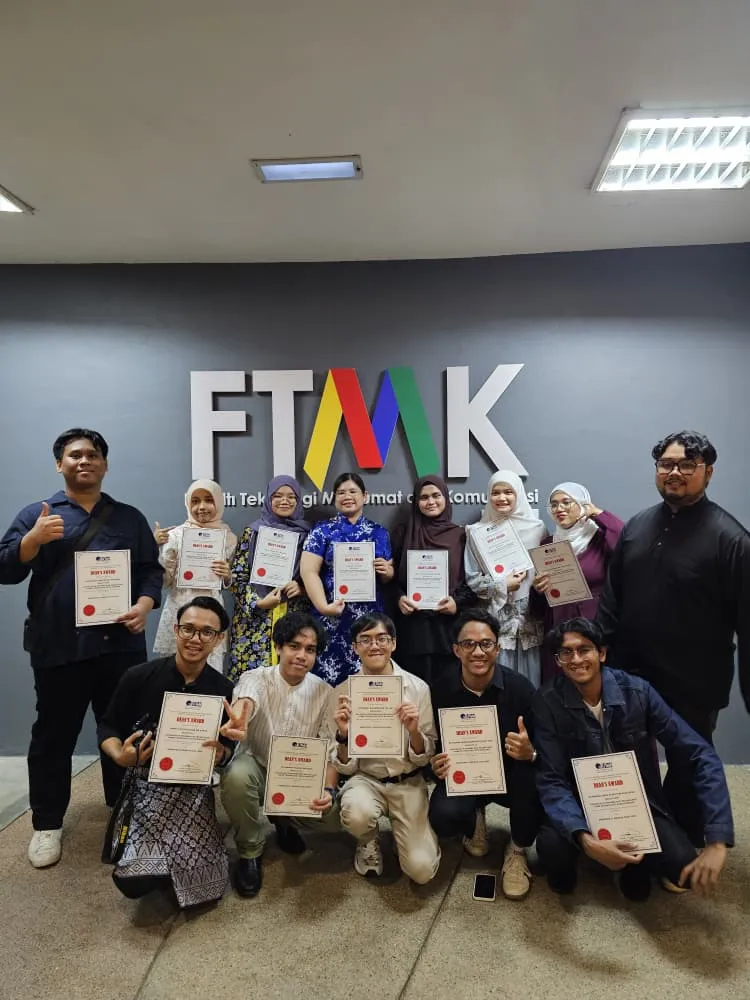
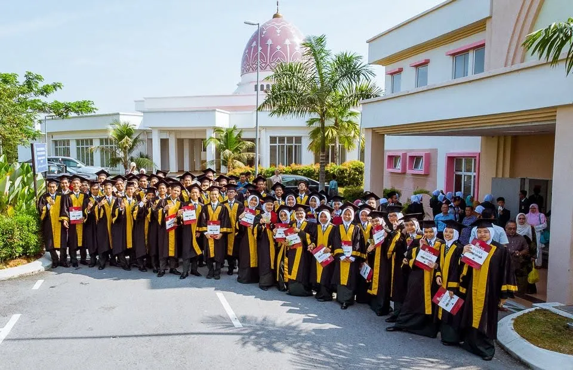
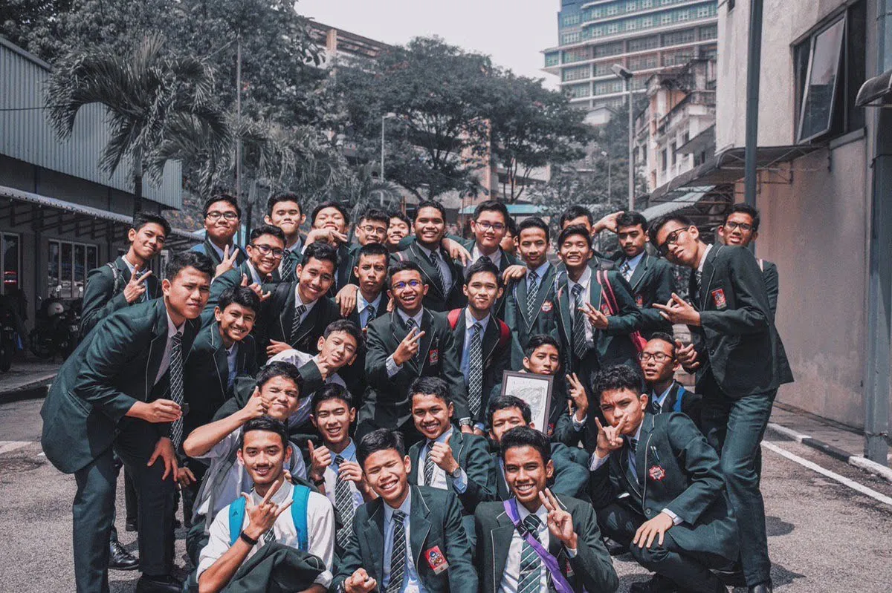
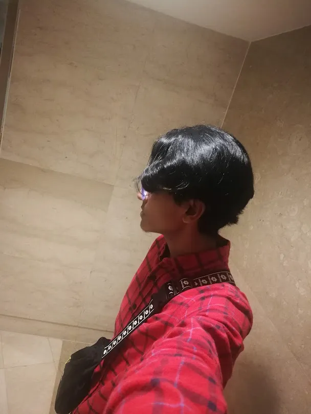

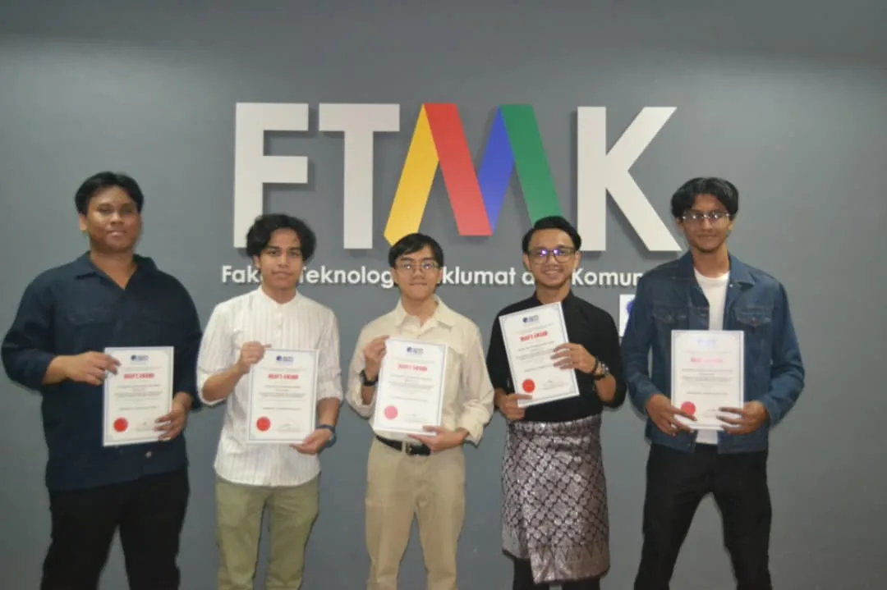